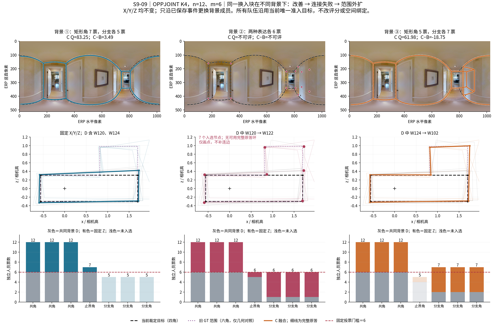
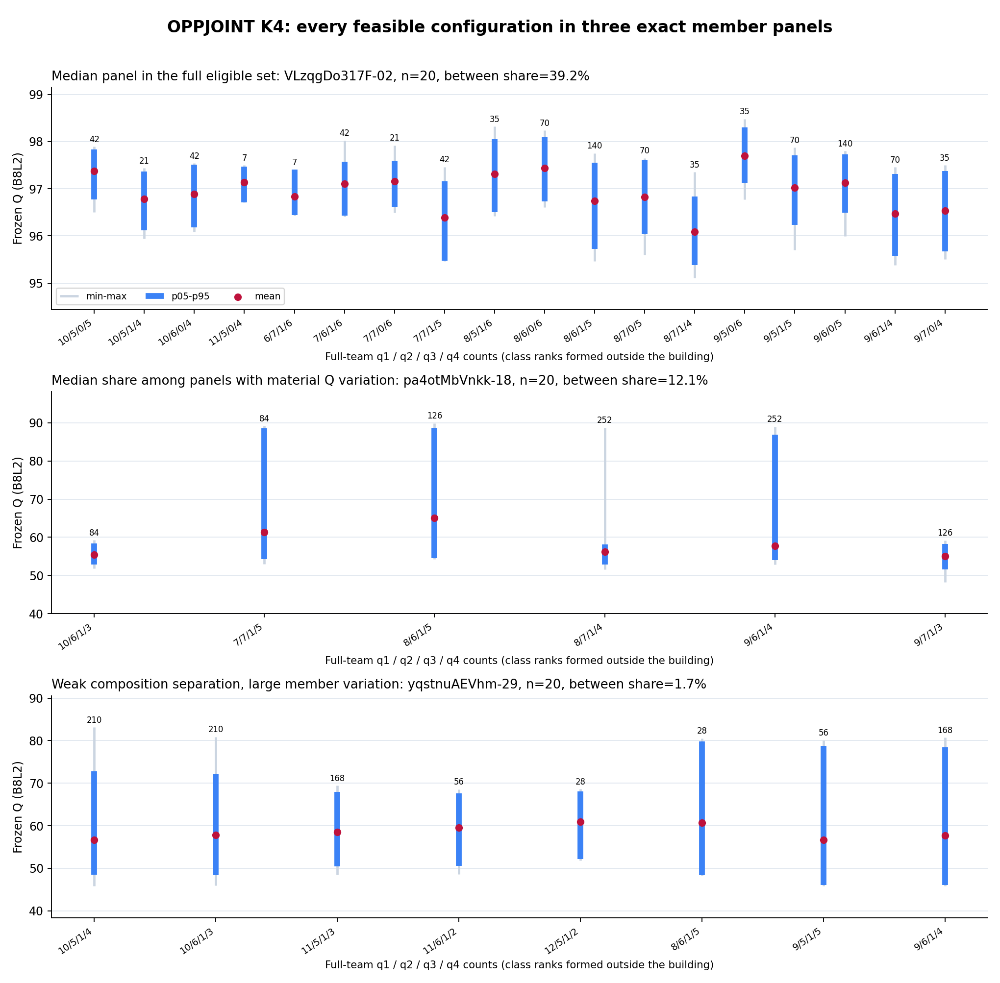

2026-10-31当前专题：更新难度下的半队与同房、联盟补齐、Q-only及逐人难度。下方保留各自原标签和团队身份；所有分类尚未最终定案。
人员分类与实际换人
2026-10-30：模拟混合类型人群 · 完整类别组合、直接AC、整类与半队ABC。TARGET为工作分类，最终分类尚未定案；本页保留前轮冻结设计身份。
基于已保存的 v2.1 数据：OPPJOINT K3/K4 联合历史质量、时间与结构机会；TARGET_DSTRUCT K3 用于结构表达，RFUSE_GEOM K2 描述融合响应。ALL 是整体描述，楼外折用于目标建筑。类别是探索后采用的工作分类；多数与条件规律不要求每图一致。固定背景的Q-only公平政策对照已完成，详见当前专题；不是历史Q匹配的因果类别效应。
对照沿用严格 ABC：A=D+X，B=D+Y，C=D+Z。跨类和同类是变化幅度，C−B 是有向质量差。时间和质量支持分母单列；缺失不填零。
完整配比与格内分布
固定候选人员池内的有限团队；先选择数据范围、方法、支持和指标，再选择图片面板与配比。各指标按各自支持统计；格内分布接入Q、转折数和记录时间，其余指标可从方法源表查看。一支队的配比不能估计格内波动。
正在读取完整配比汇总……
换人设计与证据覆盖
半数替换、固定A扩m、固定块与背景、较大团队AC分别保留身份；未选中或不可用不等于无效。维度覆盖按该方法的全局广筛事件汇总，仅随方法变化；下方设计及数值表按当前条件与目标范围筛选。
质量、几何、劳动和失败等指标
原交付逐条件汇总；Q及支持经过独立复核，其余维度保留原表字段，未逐项重算。选择正式难度或结构条件可查看对应分层。原表failed表示缺Q，不能一概解释为融合失败；不完整输出另列。
等待结果数据。
已保存的正向与非正向案例
按方法、条件和范围显示；正向依据 C−B，幅度差是另一指标，不能混为一谈。原始作答及事件可追溯，案例本身不代表全部图片。
多阶段换人链案例
按实际阶段列出保存的两端成员和原始记录；数值解释随各设计而变化。
下载方法案例与原始记录 · 下方的已保存案例可查看实际替换成员、原答与共识。
分类与名单
角色和中心随方法、楼外折以及类编号一同变化。历史 Q、log 时间和转折中心是图内中心化后的历史特征，不是绝对分数、秒数或该图实际表现；融合响应中心另列。缺失表示没有记录。
| 人员 | 类别 | 粗类 | 细类 | 当前折角色 | 历史Q中心 | 历史log时间中心 | 历史转折中心 | 融合Q响应中心 | 标签依据／缺失 |
|---|
32 个条件
保留每条方向、范围和支持；数值按图片均值。失败按事件列出，非质量零分。
| 方法及范围 | 来源→目标 | n／m | 图／楼／事件 | 同类／跨类幅度 | C−B，正向图／有效图 | 时间变化，有效图 | A／B／C失败事件 |
|---|
逐图与实际成员
按方法、总人数、替换人数和明确方向筛选；逐图与团队事件各自保留来源范围。没有匹配事件时明确显示，不补造。
机制与配比例子
点击原图放大。图是相应保存实验的机制证据，不能代替全部图片的统计。




下载32条件CSV · 下载312逐图CSV · 下载全部分类名单 · 下载精确团队事件